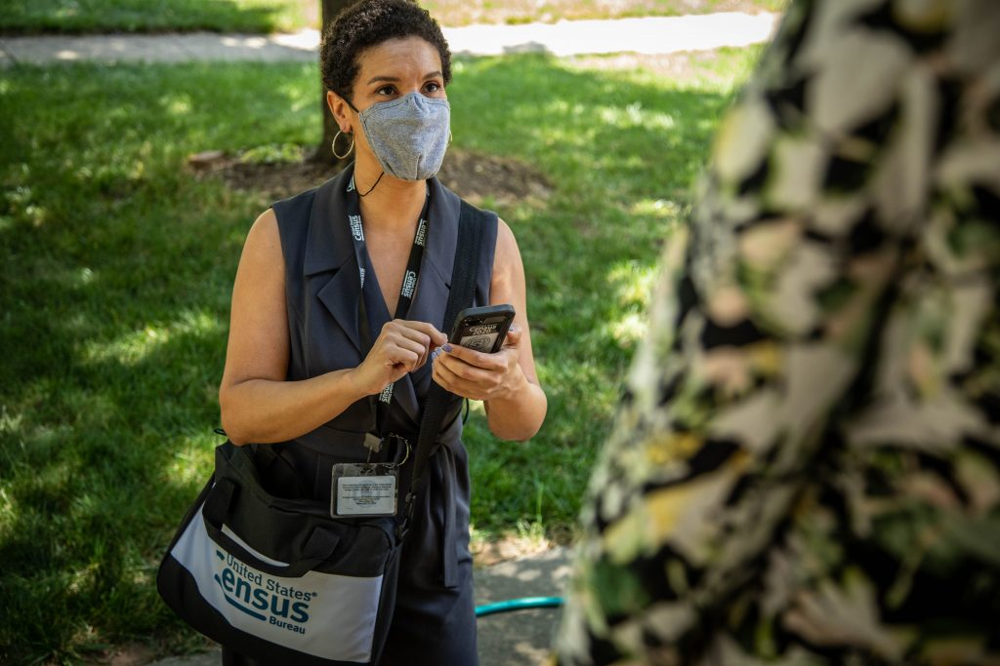
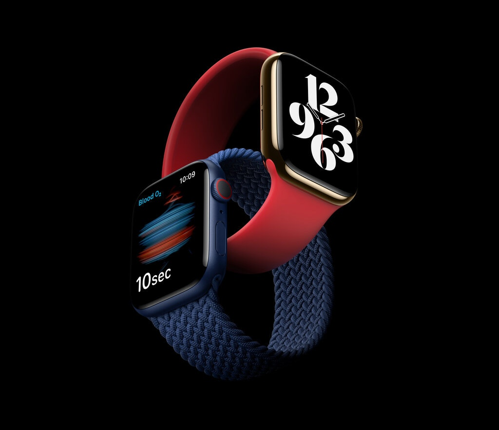

Wednesday,September 16,2020
Coimbatore
City Edition
3 pages
Election Beat 2020: The ongoing watchdog obligation to cover the US census

Every 10 years, a U.S. election bestows a predictable long-term advantage to one of the two major parties. The 2010 election handed that edge to the Republicans, and they didn’t waste the opportunity for gerrymandering — manipulating
the boundaries of an electoral district in a way that gives one party an unfair advantage. Even though Democratic candidates received more votes nationwide than did Republican candidates in the 2012 House elections, Republicans won
a 234-201 seat majority.
That outcome paled alongside what happened in Wisconsin. After the 2010 election, the Republican-controlled legislature gerrymandered the state’s Assembly districts to an extent that made it impossible for Democrats to compete.
In Wisconsin’s 2018 election, for instance, Republican candidates received only 45% of the statewide popular vote but won 63% of the State Assembly’s seats.
Unrestricted partisan gerrymandering was sanctioned by the Supreme Court in 2019. The ruling came in a 5-4 decision with the five Republican-appointed justices in the majority. “Excessive partisanship in districting leads
to results that reasonably seem unjust,” said Chief Justice John Roberts, writing for the majority. “But the fact that such gerrymandering is incompatible with democratic principles does not mean that the solution lies with the federal
judiciary …” Speaking for the minority, Justice Elena Kagan wrote: “For the first time in this Nation’s history, the majority declares that it can do nothing about an acknowledged constitutional violation …”
The New Apple Watch Measures Your Blood Oxygen

The new Apple Watch can be summed up in two words: blood oxygen.
The ability to measure your blood’s oxygen saturation — an overall indicator of wellness — is the most significant new feature in the Apple Watch Series 6, which was unveiled this week and becomes available on Friday.
(The watch is otherwise not that different from last year’s Apple watch.) The feature is particularly timely with the coronavirus, because some patients in critical condition with Covid-19 have had low blood oxygen levels.
Youtube lanchues short video

Over the next few days in India, we’re launching an early beta of Shorts with a handful of new creation tools to test this out. This is an early version of the product, but we're releasing it now to bring you — our global community of users, creators and artists — on our journey with us as we build and improve Shorts," YouTube said in a blogpost on Monday.
The Great Vaccine Race: Inside the Unprecedented Scramble to Immunize the World Against COVID-19
The cleverest of enemies thrive on surprise attacks. Viruses—and coronaviruses in particular—know this well. Remaining hidden in animal hosts for decades, they mutate steadily, sometimes serendipitously morphing into more effective
and efficient infectious agents. When a strain with just the right combination of genetic codes that spell trouble for people makes the leap from animal to human, the ambush begins.
Such was the case with SARS-CoV-2, the coronavirus behind COVID-19, and the attack was mostly silent and insidious at first. Many people infected with SARS-CoV-2 remained oblivious as they served as the virus’s new home and
allowed it to establish a foothold in the global human population. These hosts were the perfect base camp for launching the attack that has upended social norms, economies, political systems and more all across the world.
The best hope for confronting this onslaught is a vaccine—if the furious research efforts underway yield effective shots, if manufacturers can distribute them to enough people and if enough of those people actually get immunized.
Vaccines rely on the idea of herd immunity, a type of biological fortress in which the vast majority of the population is protected against infection. One way to get there is via natural infection, which involves enough people
getting infected and recovering without serious consequences. But many public-health experts say pushing to open businesses and schools, so healthy people who might not get seriously ill if infected can develop this immunity, is a
dangerous strategy that leaves too much to chance; there is no way to predict how much time it will take, and along the way the virus will keep harming and killing people until enough people become immune.